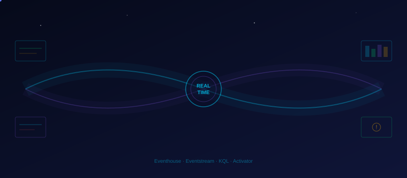

Real-Time Intelligence
BREAKING: Geneva Prime ground station detected a new near-Earth object on an unusual trajectory. Major Nakamura bursts into the data center: "We need real-time alerts. Not tomorrow — NOW. If something comes within 0.05 AU, I want to know within seconds."

🌐 Real-Time Hub Overview
The Real-Time Hub is Fabric's centralized management surface for all streaming artifacts — Eventstreams, Eventhouse databases, and Activator alerts live here in one place. Think of it as Mission Control for every piece of data that moves in real time.
In the Fabric portal, click Real-Time Hub in the left navigation pane.
Explore the three tabs:
- My streams — Eventstreams you own or have access to.
- All streams — Organization-wide streaming sources.
- Alerts — Active Activator rules and their status.
As you build artifacts in this module, return to the Real-Time Hub to see them appear automatically. It is the single pane of glass for everything real-time.
🏠 Create an Eventhouse
An Eventhouse is Fabric's real-time analytics engine, optimized for time-series and log data. It delivers sub-second query performance using the Kusto Query Language (KQL). Inside an Eventhouse you create one or more KQL databases to organize your data.
- Navigate to your ZOSA workspace.
- Click + New item → select Eventhouse.
- Name it:
zosa_eventhouse→ click Create. - Once the Eventhouse opens, a default KQL database is created automatically. Rename it to
asteroid_detections(or create a new one with that name). - Confirm the database appears under your Eventhouse in the workspace list.
Traditional Lakehouse queries run in seconds to minutes. Eventhouse returns results in milliseconds — essential when Major Nakamura wants to know about a close approach now, not after the next Spark job finishes.
📡 Create an Eventstream
An Eventstream is a no-code streaming pipeline that captures, transforms, and routes real-time events. For this lab you will simulate live asteroid detections using a Custom App source.
- In your workspace, click + New item → select Eventstream.
- Name it:
asteroid_feed→ click Create. - In the Eventstream canvas, click New source → Custom App.
- Copy the connection string / endpoint URL shown — you will need it for the simulator script below.
Simulator Script
Create a Python file simulate_detections.py on your local machine and run it while you work through the rest of this module:
import requests
import json
import time
import random
from datetime import datetime
# Paste the connection string from Eventstream Custom App source
ENDPOINT = "YOUR_EVENTSTREAM_ENDPOINT"
OBJECTS = ["2024 XR1", "2025 AB3", "2024 QZ7", "2025 KN9", "2024 VT2"]
STATIONS = ["GS-01", "GS-03", "GS-06", "GS-11"]
print("🚀 Asteroid detection simulator started — Ctrl+C to stop")
while True:
event = {
"detection_id": f"DET-{random.randint(10000, 99999)}",
"timestamp": datetime.utcnow().isoformat() + "Z",
"object_name": random.choice(OBJECTS),
"miss_distance_au": round(random.uniform(0.01, 0.5), 4),
"velocity_kmps": round(random.uniform(5.0, 35.0), 2),
"estimated_diameter_km": round(random.uniform(0.01, 2.0), 3),
"ground_station_id": random.choice(STATIONS),
"is_potentially_hazardous": random.random() < 0.3,
}
try:
resp = requests.post(ENDPOINT, json=event)
status = "✅" if resp.status_code < 300 else f"⚠️ {resp.status_code}"
print(f"{status} Sent {event['detection_id']} — {event['object_name']} at {event['miss_distance_au']} AU")
except Exception as e:
print(f"❌ Error: {e}")
time.sleep(5)Replace YOUR_EVENTSTREAM_ENDPOINT with the actual endpoint URL copied from step 4. Keep the script running in a terminal for the remainder of this module.
🔗 Direct Ingestion to Eventhouse
With direct ingestion, the Eventstream routes raw events straight into your Eventhouse KQL database — no intermediate Lakehouse or transformation step required.
- Return to the
asteroid_feedEventstream canvas. - Click New destination → Eventhouse.
- Select:
- Workspace: your ZOSA workspace
- Eventhouse:
zosa_eventhouse - KQL Database:
asteroid_detections
- Under Table, choose Create new → name it
asteroid_detections.
Fabric auto-detects the schema from incoming events. Review the column mapping:
| Source field | Column name | Data type |
|---|---|---|
detection_id | detection_id | string |
timestamp | timestamp | datetime |
object_name | object_name | string |
miss_distance_au | miss_distance_au | real |
velocity_kmps | velocity_kmps | real |
estimated_diameter_km | estimated_diameter_km | real |
ground_station_id | ground_station_id | string |
is_potentially_hazardous | is_potentially_hazardous | bool |
Click Publish. Within seconds, events from the simulator start landing in the Eventhouse.
Click Data preview on the destination node to confirm rows are arriving.
🔍 KQL Queries
Open a KQL Queryset against your asteroid_detections database to explore the live data.
- In your workspace, click + New item → KQL Queryset.
- Name it
asteroid_explorationand connect it to theasteroid_detectionsdatabase.
Last 10 Detections
asteroid_detections
| order by timestamp desc
| take 10Close Approaches (< 0.05 AU) in the Last Hour
asteroid_detections
| where timestamp > ago(1h)
| where miss_distance_au < 0.05
| project timestamp, object_name, miss_distance_au, velocity_kmps
| order by miss_distance_au ascDetection Rate per 10-Minute Window
asteroid_detections
| summarize count() by bin(timestamp, 10m)
| render timechartHazardous Object Breakdown
asteroid_detections
| where timestamp > ago(1h)
| summarize
total = count(),
hazardous = countif(is_potentially_hazardous),
closest = min(miss_distance_au)
by object_name
| extend hazard_pct = round(100.0 * hazardous / total, 1)
| order by closest ascKQL is purpose-built for time-series analytics. Queries that would take minutes in SQL run in milliseconds here because the Eventhouse indexes data by time automatically.
📊 Materialized Views
Materialized views pre-compute rolling aggregations inside the Eventhouse. Dashboards read from the view instead of scanning raw data, which dramatically improves performance at scale.
Run the following command in your KQL Queryset:
.create materialized-view HourlyDetectionSummary on table asteroid_detections
{
asteroid_detections
| summarize
total_detections = count(),
hazardous_count = countif(is_potentially_hazardous),
min_distance = min(miss_distance_au),
avg_velocity = avg(velocity_kmps)
by bin(timestamp, 1h)
}Verify the view is working:
HourlyDetectionSummary
| order by timestamp desc
| take 24Materialized views update incrementally as new data arrives — you do not need to refresh them manually. They are ideal for dashboard tiles that display hourly or daily summaries.
📈 Real-Time Dashboard
Create a live dashboard that Mission Control can display on the big screen.
- In your workspace, click + New item → Real-Time Dashboard.
- Name it:
Asteroid Mission Control. - Click + Add tile and connect to the
asteroid_detectionsdatabase.
Suggested Tiles
| Tile | KQL Query | Visual type |
|---|---|---|
| Total Detections (24 h) | asteroid_detections | where timestamp > ago(24h) | count |
Stat / KPI card |
| Closest Approach | asteroid_detections | where timestamp > ago(1h) | summarize min(miss_distance_au) |
Gauge |
| Detection Timeline | asteroid_detections | summarize count() by bin(timestamp, 10m) | render timechart |
Time chart |
| Hazardous Rate | HourlyDetectionSummary | extend rate = round(100.0 * hazardous_count / total_detections, 1) | project timestamp, rate | render timechart |
Time chart |
| Ground Station Activity | asteroid_detections | where timestamp > ago(1h) | summarize count() by ground_station_id | render piechart |
Pie chart |
After adding all tiles, click Manage → Auto refresh → set interval to 30 seconds.
Click Save and optionally pin the dashboard to the workspace home.
🚨 Activator — Set Alert
Activator lets you define automated alerts that fire when real-time data meets a condition. No code required — you configure everything visually.
- Open your
Asteroid Mission ControlReal-Time Dashboard. - Hover over the Closest Approach gauge tile.
- Click the ellipsis (…) menu → Set alert.
| Setting | Value |
|---|---|
| Condition | min_distance is less than 0.05 |
| Evaluate every | 1 minute |
| Alert name | Close Approach Warning |
- ✉️ Send an email → enter Major Nakamura's email address.
- 💬 Post to a Teams channel → select the ZOSA Mission Control channel.
- 📓 Run a Fabric notebook → select a notification/logging notebook (optional).
Click Create. The Activator item appears in your workspace.
Activator evaluates the condition on the schedule you set. When the condition is true, it executes all configured actions and passes event context (object name, distance, velocity) as dynamic parameters. You can view the alert history and manage all Activator items from the Real-Time Hub → Alerts tab.
In this lab, use your own email to test. You should receive an alert within a few minutes because the simulator generates close approaches (< 0.05 AU) roughly 10% of the time.
❄️ Hot/Cold Data Pattern
Real-time and batch analytics work best together. Here is the architecture ZOSA uses:
┌─────────────────────┐
Ground Stations ──▶ │ Eventstream │
│ (asteroid_feed) │
└────────┬────────────┘
│
┌────────────┼────────────┐
▼ ▼
┌─────────────────┐ ┌──────────────────┐
│ Eventhouse │ │ Lakehouse │
│ (HOT PATH) │ │ (COLD PATH) │
│ │ │ │
│ • Last 30 days │ │ • Full history │
│ • Sub-second KQL │ │ • Spark / SQL │
│ • Dashboards │ │ • ML training │
│ • Activator │ │ • Power BI (batch) │
└─────────────────┘ └──────────────────┘
│ ▲
└── Retention policy ──────┘
(auto-export after 30d)Key Concepts
Holds the last 30 days of data. Optimized for sub-second KQL queries, live dashboards, and Activator alerts. This is where Mission Control looks when an asteroid is approaching right now.
Stores the full historical archive. Queried via the Lakehouse SQL analytics endpoint or Spark notebooks for batch analytics, Power BI semantic models, and ML training. This is where Dr. Osei's data science team runs predictive models.
Configure an Eventhouse retention policy to export data older than 30 days to OneLake automatically. Cold data remains queryable — it just moves to a more cost-effective storage tier.
Configure Retention (Optional)
// Set 30-day retention on the asteroid_detections table
.alter table asteroid_detections policy retention{
"SoftDeletePeriod": "30.00:00:00",
"Recoverability": "Enabled"
}In a production scenario, you would also configure a data export rule or use the Eventstream's second destination to write simultaneously to both the Eventhouse and the Lakehouse. This gives you real-time and historical coverage from a single stream.
Verify that all components are working end-to-end:
- Eventhouse
zosa_eventhousecreated with KQL databaseasteroid_detections - Eventstream
asteroid_feedreceiving simulated events from the Python script - KQL queries return results in the KQL Queryset
- Materialized view
HourlyDetectionSummaryreturns aggregated data - Real-Time Dashboard
Asteroid Mission Controlshows live data with 30-second refresh - Activator alert
Close Approach Warningconfigured for miss distance < 0.05 AU